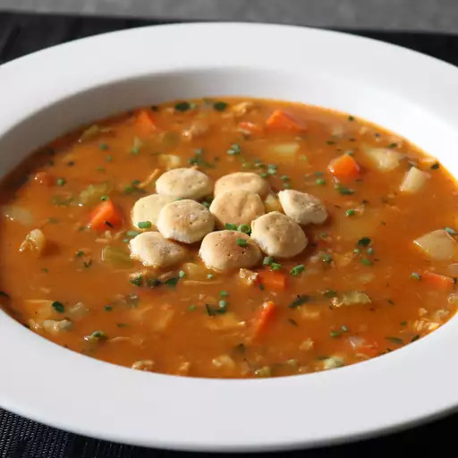

Manhattan clam chowder is usually very watery, too tomato-y,
and not nearly clammy enough so I reworked the recipe into
something significantly more rich, satisfying, and delicious.
My secrets? A ton of clams, not too much tomato, and a
little bit of flour to thicken things up. Serve with oyster
crackers and garnish with fresh chives, parsley, tarragon,
or even dill, if desired.
How to Make Clam Chowder
You'll find a detailed ingredient list and
step-by-step instructions in the recipe below,
but let's go over the basics:
Ingredients
- 2 (10 ounce) cans whole baby clams, undrained
- 2 (6.5 ounce) cans chopped clams, undrained
- 4 strips thick-cut bacon, cut into 1/2-inch pieces
- 1 cup diced yellow onion
- 3 (6.5 ounce) cans minced clams, drained with juice reserved
- 3 cloves garlic, minced
- kosher salt to taste
- 2 tablespoons tomato paste
- 2 tablespoons all-purpose flour
- 1 cup bottled clam juice
- 2 cups chicken broth
- 2 medium carrots, cut into 1/2 inch pieces
- 2 ribs celery, sliced into 1/2-inch pieces
- ½ cup diced Italian tomatoes
- freshly ground black pepper to taste
- 3 pinches cayenne pepper
- 3 cups peeled, diced Yukon Gold potatoes
- 2 teaspoons minced fresh tarragon
- 2 tablespoons chopped fresh Italian parsley
Steps
-
Drain baby and chopped clams. Reserve liquid
in the refrigerator until needed and set clams aside.
-
Place bacon in a soup pot over medium-high heat;
cook and stir until well-browned and almost crispy,
7 to 10 minutes. Add onion, garlic, and a pinch of salt;
cook and stir until onions start to soften and
turn translucent, 5 to 7 minutes.
-
Add tomato paste; cook and stir for 2 minutes. Don't
worry if some of the tomato paste sticks to the bottom
of the pot; we want that to happen. Sprinkle in flour;
cook and stir for 2 to 3 minutes.
-
Dump in reserved clam juice plus bottled clam juice and
chicken broth. Stir with a spatula, scraping the bottom
of the pot to deglaze any caramelization.
-
Add carrots, celery, clams, diced tomatoes, pepper,
and cayenne; stir and bring to a boil. Reduce heat
to medium-low and simmer for 15 to 20 minutes, skimming
off some bacon fat if desired.
-
Add diced potatoes and cook until tender but not falling
apart, about 20 minutes. Taste and adjust for salt,
if needed. Stir in fresh tarragon and parsley just before serving.